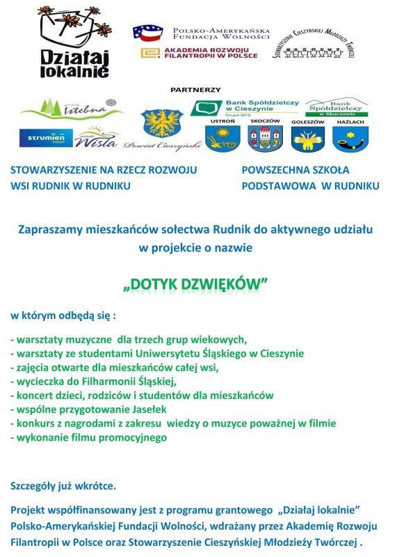

Dotyk Dźwięków
Poprzez muzykę poważną zintegrujemy społeczeństwo, przeprowadzimy jego edukację muzyczną. Odbędą się zajęcia muzyczne dla dzieci, warsztaty ze studentami, koncert dla społeczności, wyjazd do Filharmonii Śląskiej.
Zapraszamy do obejrzenia galerii zdjęć "Dotyk Dźwięków".
Zapraszamy do obejrzenia galerii zdjęć "Dotyk Dźwięków 2".
Zapraszamy do obejrzenia galerii zdjęć "Dotyk Dźwięków 3".
Zapraszamy do obejrzenia galerii zdjęć "Dotyk Dźwięków 4".
Muzyczne warsztaty w Rudniku
Dotyk Dźwięków - artykuł na ox.pl
Dzień Seniora w Rudniku - artykuł na ox.pl
